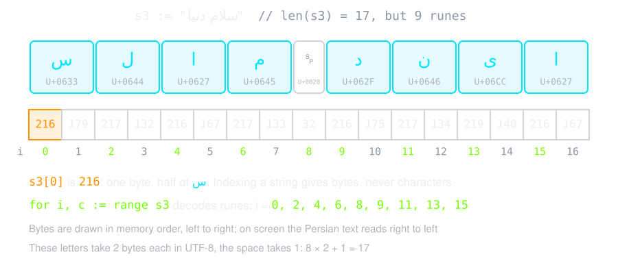
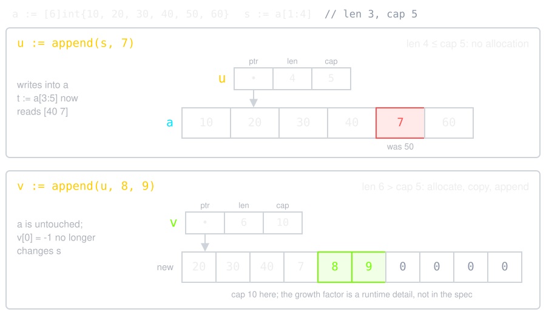
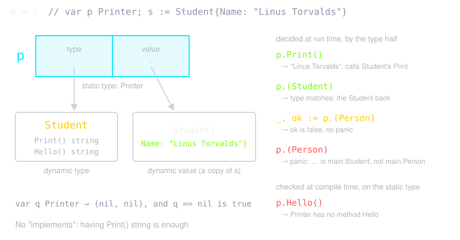
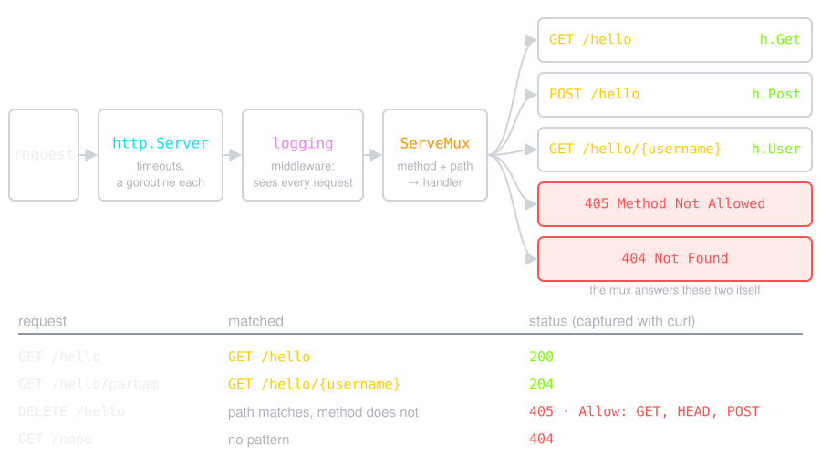
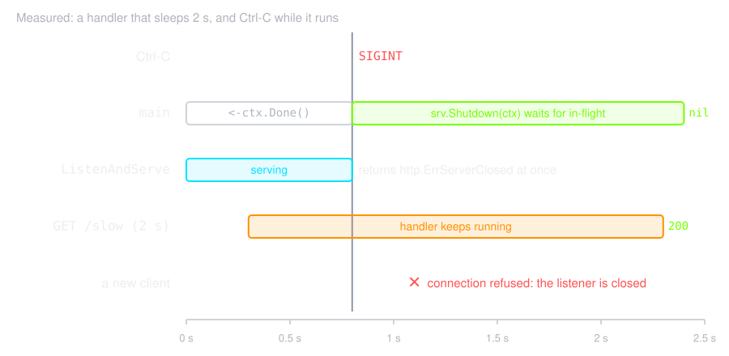
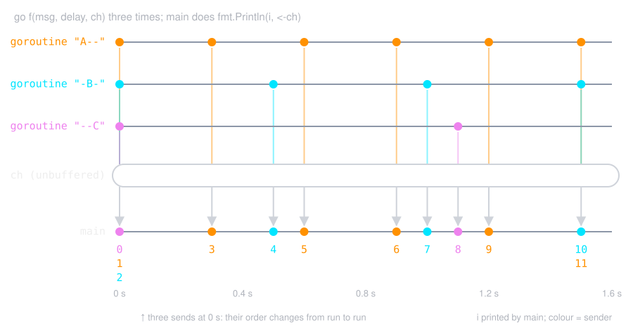

Go is
- Modern
- General-purpose
- Open Source
Programming Language
- Officially announced at November 10, 2009
- It began as an internal Google project
-
The designers were primarily motivated by their shared
dislike of C++
-
Its spiritual fathers are
- Robert Griesemer
- Ken Thompson
- Rob Pike
- version 1.0 was released in March 2012.
-
Go is widely used in production at Google and in many other organizations
and open-source projects.
-
Lack of support for generic programming and
the verbosity of error handling in Go 1.x had
drawn considerable criticism.
-
Generics → added in Go 1.18 (2022);
error handling is still explicit, by choice.
-
Go is syntactically similar to C, but with
memory safety,
garbage collection,
structural typing, and
CSP-style concurrency.
- There are two major implementations:
-
Google's self-hosting compiler toolchain targeting multiple operating
systems, mobile devices, and WebAssembly.
- gccgo, a GCC frontend.
memory safety
int a[10];
a[11] = 10;
garbage collection
void allocate_forever(void) {
int *a = malloc(10 * sizeof(int));
a[0] = 10;
}
structural typing (in Go)
type Shape interface{ Area() float64 }
// Square never mentions Shape
type Square struct{ Side float64 }
func (s Square) Area() float64 { return s.Side * s.Side }
var sh Shape = Square{Side: 3} // compiles: Square has Area()
- Go code is easy to read and easy to understand
- Go does not have a preprocessor
-
Go uses static linking by default,
which means that the binary files produced can be easily transferred to
other machines with the same OS.
-
Fully static only for a pure-Go Linux build (
CGO_ENABLED=0,
file: "statically linked"); a macOS binary still links
libSystem (otool -L), because macOS requires
it.
preprocessor
#define students_foreach_loop(stds, element) \
struct students_el *element ## _el = stds->head; \
const struct student *element = element ## _el->student; \
for (; element ## _el != NULL; \
element ## _el = element ## _el->next, \
element = element ## _el ? element ## _el->student : NULL)
students_foreach_loop(stds, el) {
fprintf(fp, "Name: %s\n", el->name);
fprintf(fp, "ID: %s\n", el->id);
fprintf(fp, "\n");
}
-
A syntax and environment adopting patterns more common in dynamic
languages:
-
Optional concise variable declaration and initialization through
type inference (
x := 0
instead of int x = 0;).
- Fast compilation.
-
Remote package management (
go get) and
online package documentation.
- Distinctive approaches to particular problems:
-
Built-in concurrency primitives:
light-weight processes (goroutines), channels, and the
select
statement.
-
An interface system in place of virtual
inheritance, and type embedding instead of
non-virtual inheritance.
-
A toolchain that, by default, produces statically linked native
binaries without external dependencies.
-
A desire to keep the language specification simple enough to hold in a
programmer's head, in part by omitting features that are common in
similar languages.
package main
import "fmt"
func main() {
fmt.Printf("Hello, دنیا\n")
}
-
Go code is organized into packages, which are similar to libraries or
modules in other languages.
-
The
import declaration must follow the
package declaration.
-
You must import exactly the packages
you need.
-
A function declaration consists of the keyword
func, the name of the function, a parameter
list (empty for main), a result list (also empty here), and the body of
the function - the statements that define what it does - enclosed in
braces.
-
Write Hello World in Go but Before
that we must install the Go! and our favorite text editor
Tip!
-
Use
Code Time.go links to see the source
code
-
Use
curl to download the source code
curl \
https://raw.githubusercontent.com/1995parham-teaching/go-lecture/main/00-hello-world/main.go \
> hello-world.go
Constants
Maintained precisely:
const e = 2.71828182845904523536028747135266249775724709369995957496696763
// careful: both operands are untyped *integer* constants, so this is 0
const wrong = 1 / 3
// one float operand is enough to make it a float constant
const third = 1.0 / 3
Typed or without type:
const M64 int64 = 1<<20
const M = 1<<20
Evaluated at compile-time:
const big = 1<<100 / 1e30 // valid constant expression
Variables
var
name
type =
expression
name
:=
expression
// inside functions only
Statically typed:
var x int
var s, t string
Implicitly or explicitly initialized:
var x2 int // x2 = 0
var s2, t2 string = "foo", "bar" // multiple assignment
var y = 42 // int
var u, b = "foo", true // string, bool
Short variable declaration:
x := 42
s, b := "foo", true
Pointers ⚰️
- A pointer value is the address of a variable.
- Not every value has an address, but every variable does.
-
With a pointer, we can read or update the value of a variable indirectly
x := 1
p := &x // p, of type *int, points to x
fmt.Println(*p) // 1
*p = 2 // equivalent to x = 2
fmt.Println(x) // 2
Predeclared Name
which can be reused
true false iota nil
int int8 int16 int32 int64
uint uint8 uint16 uint32 uint64 uintptr
float32 float64 complex128 complex64
bool byte rune string error
any comparable
make len cap new append copy close delete clear
complex real imag min max
panic recover print println
which can't be reused
break default func interface select
case defer go map struct
chan else goto package switch
const fallthrough if range type
continue for import return var
- Let's define variables and constants to see how they work
Calculation
f := 212.0
c := (f - 32) * 5 / 9
fmt.Println(c) // 100
var x uint8 = 1<<1 | 1<<5
var y uint8 = 1<<1 | 1<<2
fmt.Printf("%08b\n", x) // "00100010"
fmt.Printf("%08b\n", y) // "00000110"
fmt.Printf("%08b\n", x&y) // "00000010"
fmt.Printf("%08b\n", x|y) // "00100110"
fmt.Printf("%08b\n", x^y) // "00100100"
The new Function
-
Another way to create a variable is to use the built-in function
new
-
The expression
new(T) create an unnamed variable of type T,
initializes it to the zero value of T, and return its address, which is
a value of type *T
- The new function is relatively rarely used.
-
Since Go 1.26
new also takes an expression:
p := new(42) is a *int
pointing at 42
func newInt() *int {
return new(int)
}
// the same thing, written out
func newIntLongWay() *int {
var dummy int
return &dummy
}
Assignment
- Tuple Assignment
- Allows several variables to be assigned at once.
-
All of the right-hand side expressions are evaluated before any of the
variable are updated.
// tuple assignment
a, b = b, a // swap
f, err = os.Open(filename) // multiple assignment
func gcd(x, y int) int {
for y != 0 {
x, y = y, x % y
}
return x
}
Statements
- Curly braces (C style)
- Multiple assignments and some other new constructs
- Statements are not Expressions.
-
Many cleanups 🧹:
- mandatory braces
- no parentheses for conditionals
- implicit break in switches
- no semicolons
- ...
Statements
if x < y {
return x
} else {
return y
}
switch day {
case Mon:
...
// break is implicit
case Tue, Wed:
...
}
- Not shown: break, goto, continue, fallthrough
Statements
// a traditional infinite loop
for {
// ...
}
for initialization; condition; post {
// zero or more statements
}
// a traditional "while" loop
for condition {
// ...
}
-
range over arrays, slices, and maps
-
In each iteration of the loop,
range produces a pair of
values: the index and the value of the element at that index.
-
If you don't want the index variable you can use the blank identifier,
whose name is _ (that is, an underscore).
for i, num := range numbers { ... }
for city, pop := range population { ... } // a map: next slide
for i := range 100 { ... } // Go 1.22: 0, 1, …, 99
Maps
counts := map[string]int{} // or make(map[string]int)
for _, w := range strings.Fields("go is fun and go is fast") {
counts[w]++ // a missing key reads as 0
}
fmt.Println(counts["go"], counts["rust"]) // 2 0
n, ok := counts["rust"] // comma-ok: missing, or really 0?
fmt.Println(n, ok) // 0 false
delete(counts, "fun")
fmt.Println(len(counts)) // 4
for word, n := range counts { // a different order on every run
fmt.Println(word, n)
}
-
map[K]V is a hash table; the zero value
nil map cannot be written to, so make one first
Functions
package main
import "fmt"
// this version starts 1, 1, 2, 3, 5, … so F(10) is 89;
// the textbook F(0) = 0, F(1) = 1 gives F(10) = 55
func Fibonacci(n int) int {
if n == 0 || n == 1 {
return 1
} else {
return Fibonacci(n-1) + Fibonacci(n-2)
}
}
func main() {
fmt.Printf("%d\n", Fibonacci(10)) // 89
}
- Conditions with taste of Fibonacci 😋
- Many loops
-
It reads
n from the terminal first, so
type a number and press enter
Result
please enter n: 10
is 10 prime? false
10th prime is 29
gcd 10 20 is 10
gcd 13 15 is 1
-
Go has one loop keyword.
for covers the
counter, the while, and the infinite loop
Interaction
package main
import "fmt"
func main() {
var n int
fmt.Scanf("%d", &n)
fmt.Printf("%d\n", n)
}
| %d |
decimal integer |
| %x, %o, %b |
integer in hexadecimal, octal, binary |
| %f, %g, %e |
floating-point number: 3.141593 3.141592653589793 3.141593e+00 |
| %t |
boolean: true or false |
| %c |
rune (Unicode code point) |
| %s |
string |
| %q |
quoted string "abc" or rune 'c' |
| %v |
any value in natural format |
| %T |
type of any value |
| %% |
literal percent sign (no operand) |
Strings
- A string is an immutable sequence of bytes
-
Text strings are conventionally interpreted as UTF-8 encoded sequence of
Unicode code points (runes)
-
The built-in
len function returns the number of bytes (not
runes) in a string, and the index operation s[i] retrieves
the i-th byte of string s, where 0 <= i < len(s)
s := "hello, world"
fmt.Println(len(s)) // 12
fmt.Println(s[0], s[7]) // 104 119 ('h' and 'w')
-
Constructions that try to modify a string's data in place are not
allowed:
s[0] = 'L' // compile error: cannot assign to s[0]
-
Four standard packages are particularly important for manipulating
strings:
bytesstringsstrconvunicode
go doc bytes
Unicode
- unicode.org
-
Which collects all of the characters in all of the world's writing
systems, plus accents and other diacritical marks, control codes like
tab and carriage return, etc.
Conversions between Strings and Numbers
-
To convert an integer to a string, one option is to use
fmt.Sprintf; another is to use the function
strconv.Itoa.
-
strconv.FormatInt() and strconv.FormatUint can
be used to format numbers in a different base
-
The
fmt.Printf verbs %b, %d,
%o, and %x are often more convenient than
Format functions
x := 123
y := fmt.Sprintf("%d", x)
fmt.Println(y, strconv.Itoa(x)) // "123 123"
-
To parse a string representing an integer, use the
strconv.Atoi or strconv.ParseInt, or
strconv.ParseUint for unsigned integers
-
The third argument of
ParseInt gives the size of the
integer type that the result must fit into
-
In any case, the type of the result is always
int64, which
you can then convert to a smaller type
-
fmt.Sscanf is useful for parsing input that consists of
orderly mixtures of strings and number all on a single line
x, err := strconv.Atoi("123") // x is an int
y, err := strconv.ParseInt("123", 10, 64) // base 10, up to 64 bits
-
A string is a slice of bytes, not of
characters
-
Index a Persian string and watch what comes back, then range over the
same string
Result
17 (len(s3)) != 9
[216 179 217 132 216 167 217 133 32 216 175 217 134 219 140 216 167]
72
Parham Alvani
216
179
³
[0]: س [2]: ل [4]: ا [6]: م [8]: [9]: د [11]: ن [13]: ی [15]: ا
Global string is which defined
What Happened?

Arrays
-
An array is a fixed-length sequence of zero or more elements of a
particular type.
-
Because of their fixed length, arrays are rarely used directly in Go.
-
By default the elements of a new array variable are initially set to the
zero value for the element type, which is 0 for numbers.
var a [3]int // array of 3 integers
fmt.Println(a[0]) // print the first element
fmt.Println(a[len(a) - 1]) // print the last element, a[2]
a := [2]int{1, 2}
b := [...]int{1, 2}
c := [2]int{1, 3}
fmt.Println(a == b, a == c, b == c) // "true false false"
d := [3]int{1, 2}
fmt.Println(a == d) // compile error:
// invalid operation: a == d (mismatched types [2]int and [3]int)
// Print the indices and elements.
for i, v := range a {
fmt.Printf("%d %d\n", i, v)
}
// Print the elements only.
for _, v := range a {
fmt.Printf("%d\n", v)
}
Slices
[]T // slice of T
-
Descriptor for an underlying array
segment
-
May grow and shrink
- Has length and capacity
- Assigning a slice copies the descriptor, not the underlying array
- Common slice operations:
-
The slice operator
s[i:j], where 0 <= i <=
j <= cap(s), creates a new slice that refers to elements i through
j - 1 of the sequence s.
len(s)
s[i]
s[i:j]
append(s, x) // append element x to slice s and return new slice
Slices play the role of dynamically sized arrays
Widely used in Go code
append and the Backing Array

- Slices with
make
-
Print the address of the slice and of its first element, before and
after an
append
Result
s1: [10 20 30 0 0 0 0 0 0 0], len(s1): 10, cap(s1): 10
s1: [10 20 30 0 0 0 0 0 0 0 10], len(s1): 11, cap(s1): 20
range s1: 0:10 1:20 2:30 3:0 4:0 5:0 6:0 7:0 8:0 9:0 10:10
s2: [10], len(s2): 1, cap(s2): 10
before appending a new variable into s
address of s is 0x54640df14060
address of s[0] is 0x54640df222d0
after appending a new variable into s
address of s is 0x54640df14060
address of s[0] is 0x54640dfcc0a0
-
The append passed the capacity, so Go allocated a
new array and copied: capacity went
10 → 20
-
The slice header did not move, but
&s[0] changed: anything still pointing
at the old array no longer sees the updates
Structures
package main
type Sample struct {
S1 int
S2 int
S3 string
private float64
}
func main() {
var smp Sample
smp.S1 = 10
smp.S2 = 20
smp.S3 = "Hello World"
}
-
A struct is an aggregate data type that groups together zero or more
named values of arbitrary types as a single entity
- Each value is called a field
- C Structures 🕺
- Data hiding:
-
The name of a struct field is exported if it begins with a capital
letter; this is Go's main access control mechanism.
-
S1, S2,
S3 are public and can be accessed from
anywhere.
-
private is private and is only visible
to code in the same package.
Struct Tags and JSON
type Name struct {
Name string `json:"name,omitempty"`
Count *int `json:"count,omitempty"`
}
func main() {
b, err := json.Marshal(Name{Name: "Parham", Count: new(3)})
fmt.Println(string(b), err) // {"name":"Parham","count":3} <nil>
var absent, zero Name
_ = json.Unmarshal([]byte(`{"name":"Ali"}`), &absent)
_ = json.Unmarshal([]byte(`{"name":"Ali","count":0}`), &zero)
fmt.Println(absent.Count == nil) // true: no "count" key
fmt.Println(*zero.Count) // 0: "count" was there
}
-
The tag maps an exported field to a
lowercase key;
encoding/json cannot see unexported fields
-
*int tells "absent" (nil)
from "0". This is go-lecture's request.Name
Methods
package main
import "fmt"
type Example struct {
Val string
count int
}
// pointer receiver: the method can change e's fields
func (e *Example) Log() {
e.count++
fmt.Printf("%d %s\n", e.count, e.Val)
}
func main() {
exm := Example{Val: "Example", count: 10}
exm.Log() // 11 Example
exm.Log() // 12 Example: the change stayed
}
Methods on Any Named Type
package main
import "fmt"
// a custom type based on a Go standard type
type integer int
// value receiver: the method gets a copy
func (i integer) log() {
fmt.Printf("%d\n", i)
}
func main() {
var i integer = 7
i.log() // 7
}
-
Any type you define in your package can have methods, but not
int itself or a type from another package
-
Compare two structs with
==, then add a
slice field and try again
-
Give the type a
String() method and print
it with Println
Result
we can compare student structs
Name: Parham, Family: Alvani, age: 27
student, Parham Alvani
Hello Torvalds, I am Parham Alvani (27)
-
Println found String() and
used it, instead of printing the fields
-
Uncomment the slice field and the comparison stops compiling: a struct
is comparable only when all of its fields are
Interfaces
package main
import "fmt"
type Printer interface {
Print()
}
type Foo struct {
X, Y int
}
type Bar struct {
X, Y float64
}
func (f Foo) Print() {
fmt.Printf("%d %d\n", f.X, f.Y)
}
func (b Bar) Print() {
fmt.Printf("%g %g\n", b.X, b.Y)
}
-
Assign a
Student to a Printer,
with no "implements" anywhere
-
Assert back to a concrete type, with and without the
, ok form, then use a type switch
Result
Linus Torvalds
p is not a person
Hello
-
Student satisfies Printer just by having the
method: interfaces are
satisfied implicitly
-
p.(Person) without
, ok would panic; with it
you get false instead
What Is Inside p?

Casting Types
-
type conversion:
T(x) looks like a cast in C, but it
converts the value: the
int 1 becomes the float32 1, a new bit pattern,
not the old bits read as a float
- Go never converts between numeric types implicitly
package main
import "fmt"
func main() {
one := 1
var f float32 = float32(one)
fmt.Println(f) // 1
}
Type Assertion
-
type assertion:
k.(T)
does not convert; it checks
at run time that the interface value
k holds a T, and panics if it does not
package main
import "fmt"
type example struct {
A int
}
func main() {
j := example{A: 10}
var k any = j
fmt.Println(k.(example).A) // 10
// the comma-ok form does not panic when the type does not match
if e, ok := k.(example); ok {
fmt.Println(e.A) // 10
}
}
Errors Are Values
var ErrNotFound = errors.New("not found")
func find(id int) (string, error) {
if id != 1 {
return "", fmt.Errorf("find %d: %w", id, ErrNotFound)
}
return "parham", nil
}
func main() {
name, err := find(2)
if err != nil {
fmt.Println(err) // find 2: not found
fmt.Println(errors.Is(err, ErrNotFound)) // true: Is unwraps %w
fmt.Println(err == ErrNotFound) // false: it is wrapped
return
}
fmt.Println(name)
}
-
error is an interface with one method,
Error() string; nil means success
defer
func main() {
f, err := os.Create("/tmp/defer.txt")
if err != nil {
fmt.Println(err)
return
}
defer f.Close() // runs when main returns, on every path
defer fmt.Println("deferred 1")
defer fmt.Println("deferred 2") // last in, first out
fmt.Fprintln(f, "data")
fmt.Println("main is done")
}
main is done
deferred 2
deferred 1
-
Clean-up sits next to the code that needs it: open, then
defer the close
Create Point Interface
type Point interface {
Distance() float64
ImageOnX() float64
ImageOnY() float64
}
Create Cartesian Point Structure
type Cartesian struct {
X float64
Y float64
}
func (c Cartesian) Distance() float64 {
return math.Sqrt(c.X*c.X + c.Y*c.Y)
}
func (c Cartesian) ImageOnX() float64 {
return c.X
}
func (c Cartesian) ImageOnY() float64 {
return c.Y
}
Create Polar Point Structure
type Polar struct {
R float64
Theta float64
}
func (p Polar) Distance() float64 {
return p.R
}
func (p Polar) ImageOnX() float64 {
return p.R * math.Cos(p.Theta)
}
func (p Polar) ImageOnY() float64 {
return p.R * math.Sin(p.Theta)
}
Use the Interface
func main() {
points := []Point{
Polar{R: 1, Theta: math.Pi / 2},
Cartesian{X: 3, Y: 4},
}
for _, pt := range points {
fmt.Printf("%T: %g (%g, %g)\n",
pt, pt.Distance(), pt.ImageOnX(), pt.ImageOnY())
}
}
-
One loop, two types: each call goes to the method of the value
inside the interface
Result
main.Polar: 1 (6.123233995736757e-17, 1)
main.Cartesian: 5 (3, 4)
-
cos(π/2) is not 0: math.Pi is only the nearest
float64 to π, so never compare floats with
==
-
The methods have value receivers, so a plain
Cartesian{…} is a Point. With
func (c *Cartesian) the same slice does not compile:
…: Cartesian does not implement Point (method Distance has pointer receiver)
Go Packages
-
A package is made up of Go files that live in the same directory and have
the same package statement at the beginning.
greet Package
└── gopherguides
└── greet
└── greet.go
package greet
import "fmt"
func Hello() {
fmt.Println("Hello, World!")
}
main Package
└── gopherguides
└── example
└── main.go
package main
import "github.com/gopherguides/greet"
func main() {
greet.Hello()
}
-
Go does not have the concept of public, private, or protected modifiers
like other languages do.
-
External visibility is controlled by
capitalization.
-
Types, variables, functions, and so on, that start with a capital letter
are available, publicly, outside the current package.
-
A symbol that is visible outside its package is considered to be
exported.
Go Modules
-
A module is a collection of packages that are released, versioned, and
distributed together. Modules may be downloaded directly from version
control repositories or from module proxy servers.
-
A module is identified by a module path, which
is declared in a
go.mod file, together with
information about the module's
dependencies.
-
the module
golang.org/x/net contains a
package in the directory html. That
package's path is golang.org/x/net/html.
Module Path
-
A module path should describe both
what the module does and
where to find it.
HTTP Server
- We want to write our own HTTP server, and handle requests our way
-
net/http is in the standard library, so
there is nothing to install and nothing
to keep up to date
-
Since Go 1.22 the built-in router understands
methods and
path parameters, which is what most people
used to reach for a framework to get
Learn the standard library first. When you later pick a framework, you
will know exactly what it is doing for you.
The Whole Server
package main
import (
"fmt"
"log"
"net/http"
)
func main() {
mux := http.NewServeMux()
mux.HandleFunc("GET /hello", func(w http.ResponseWriter, r *http.Request) {
fmt.Fprintln(w, "Hello World")
})
log.Fatal(http.ListenAndServe(":1373", mux))
}
- No dependencies, no
go get, one file
Handlers
- A handler is anything with this method:
type Handler interface {
ServeHTTP(w http.ResponseWriter, r *http.Request)
}
w is where you
write the response,
r is the request you
read
http.HandlerFunc adapts a plain function
to that interface, which is why HandleFunc accepts a
function
Routing Patterns
mux.HandleFunc("GET /hello", h.Get)
mux.HandleFunc("POST /hello", h.Post)
mux.HandleFunc("GET /hello/{username}", h.User)
-
A leading method restricts the route; a
request with the wrong method gets
405 Method Not Allowed
without you writing anything
-
{username} is a wildcard, read back with
r.PathValue("username")
-
{path...} matches the rest of the path, and
a trailing / matches a subtree
- When two patterns match, the more specific one wins
Reading the Request
// path: GET /hello/{username}
name := r.PathValue("username")
// query: GET /hello?hello=IE
value := r.FormValue("hello")
// body: POST /hello with application/json
var req request.Name
if err := json.NewDecoder(r.Body).Decode(&req); err != nil {
http.Error(w, err.Error(), http.StatusBadRequest)
return
}
-
Check the
Content-Type before decoding,
with mime.ParseMediaType, so
application/json; charset=utf-8 is still accepted
Writing the Response
enc, err := json.Marshal(fmt.Sprintf("Hello World from %s", h.From))
if err != nil {
w.WriteHeader(http.StatusInternalServerError)
return
}
w.Header().Set("Content-Type", "application/json")
w.WriteHeader(http.StatusOK)
_, _ = w.Write(enc)
-
Order matters: headers, then
status, then
body
-
Writing the body first sends an implicit
200, and your
WriteHeader afterwards is ignored
The Life of a ResponseWriter
![Three phases. 1: w.Header().Set Content-Type application/json only edits a map in memory. 2: w.WriteHeader(201) fixes HTTP/1.1 201 Created and a copy of the headers, one final status per response. 3: two w.Write calls send the body a and b, and the server adds Content-Length 6. Captured with curl: a header set after WriteHeader is not in the response. Writing the body first commits an implicit 200 OK with a sniffed Content-Type text/plain; charset=utf-8, the later WriteHeader(418) is never sent, and the server logs http: superfluous response.WriteHeader call from main.main.func1 (main.go:14)](./img/response-writer.svg)
Handlers That Need Something
-
A handler usually needs a logger, a database, a config. Make it a
method on a struct instead of reaching
for a global
type Hello struct {
From string
Logger *slog.Logger
}
func (h Hello) User(w http.ResponseWriter, r *http.Request) {
h.Logger.Info("path parameter", "username", r.PathValue("username"))
w.WriteHeader(http.StatusNoContent)
}
// wiring it up
h := handler.Hello{From: "Golang", Logger: logger}
mux.HandleFunc("GET /hello/{username}", h.User)
Middleware Is Just a Function
func logging(logger *slog.Logger, next http.Handler) http.Handler {
return http.HandlerFunc(func(w http.ResponseWriter, r *http.Request) {
start := time.Now()
next.ServeHTTP(w, r)
logger.Info("request",
"method", r.Method,
"path", r.URL.Path,
"took", time.Since(start),
)
})
}
srv.Handler = logging(logger, mux)
-
Takes a handler, returns a handler. Auth, CORS, and recovery are all
this same shape, and they compose by nesting
One Request, End to End

Do Not Use ListenAndServe in Production
-
The package-level helper has
no timeouts, so one slow client can hold
a connection open forever
srv := &http.Server{
Addr: "0.0.0.0:1373",
Handler: mux,
ReadHeaderTimeout: 5 * time.Second,
ReadTimeout: 15 * time.Second,
WriteTimeout: 15 * time.Second,
IdleTimeout: 60 * time.Second,
}
Graceful Shutdown
ctx, stop := signal.NotifyContext(context.Background(),
os.Interrupt, syscall.SIGTERM)
defer stop()
go func() {
if err := srv.ListenAndServe(); err != nil &&
!errors.Is(err, http.ErrServerClosed) {
logger.Error("http server failed", "error", err.Error())
}
}()
<-ctx.Done()
shutdownCtx, cancel := context.WithTimeout(context.Background(), 10*time.Second)
defer cancel()
_ = srv.Shutdown(shutdownCtx)
-
Shutdown stops accepting new connections
and lets in-flight requests finish
-
A clean stop returns
http.ErrServerClosed, so that one is not
an error
Shutdown, Measured

- Run the server, then talk to it with
curl
-
Watch the structured log on the server
side while you do
go run ./httpserver
Result: GET
$ curl -i localhost:1373/hello
HTTP/1.1 200 OK
Content-Type: application/json
Date: Mon, 16 Nov 2026 01:16:10 GMT
Content-Length: 25
"Hello World from Golang"
$ curl -i 'localhost:1373/hello?hello=IE'
HTTP/1.1 200 OK
Content-Type: application/json
Date: Mon, 16 Nov 2026 01:16:10 GMT
Content-Length: 25
"Hello World from Golang"
$ curl -i localhost:1373/hello/parham
HTTP/1.1 204 No Content
Date: Mon, 16 Nov 2026 01:16:10 GMT
-
204: the handler only logs the name; look
at the server side
Result: POST and DELETE
$ curl -i -X POST -H 'Content-Type: application/json' \
-d '{"name":"Parham","count":3}' localhost:1373/hello
HTTP/1.1 200 OK
Content-Type: application/json
Date: Mon, 16 Nov 2026 01:16:10 GMT
Content-Length: 29
"Hello to Parham from Golang"
$ curl -s -o /dev/null -w '%{http_code}\n' -X DELETE localhost:1373/hello
405
-
Nobody wrote that 405. There is a
GET /hello pattern and no DELETE one, so the
ServeMux answered for us
Server Side
time=2026-11-16T02:16:09.043+01:00 level=INFO msg="http server listening" addr=0.0.0.0:1373
time=2026-11-16T02:16:10.441+01:00 level=INFO msg="read hello from query parameter" handler=hello hello=IE
time=2026-11-16T02:16:10.450+01:00 level=INFO msg="read username from path parameter" handler=hello username=parham
time=2026-11-16T02:16:10.458+01:00 level=INFO msg="There is a count" handler=hello count=3
time=2026-11-16T02:16:10.471+01:00 level=INFO msg="shutdown requested" cause="interrupt signal received"
-
log/slog writes key-value pairs, so the
logs are greppable and machine readable without a library
-
handler=hello comes from
logger.With("handler", "hello") — set once at wiring time,
attached to every line
-
The last line is Ctrl-C:
context.Cause says why the server
stopped
Testing a Handler
func TestGet(t *testing.T) {
h := handler.Hello{From: "Golang", Logger: slog.New(slog.DiscardHandler)}
w := httptest.NewRecorder()
h.Get(w, httptest.NewRequest("GET", "/hello", nil))
if got := w.Header().Get("Content-Type"); got != "application/json" {
t.Errorf("Content-Type = %q", got)
}
if w.Code != 200 || w.Body.String() != `"Hello World from Golang"` {
t.Errorf("got %d %s", w.Code, w.Body)
}
}
$ go test ./httpserver/handler
ok github.com/1995parham-teaching/go-lecture/httpserver/handler 0.303s
-
httptest.NewRecorder is a
ResponseWriter that remembers; no server, no port. Put this
in handler/hello_test.go (package
handler_test)
Goroutines
-
The
go statement launches a function call
as a goroutine
go f()
go f(x, y, ...)
A goroutine runs concurrently (but not necessarily in parallel)
A goroutine is a thread of control within the program, with its own local
variables and stack. Much cheaper to create and schedule than operating
system threads.
A Simple Example
Function f is launched as 3 different goroutines, all running concurrently:
package main
import (
"fmt"
"sync"
"time"
)
func f(msg string, delay time.Duration) {
for range 5 {
fmt.Println(msg)
time.Sleep(delay)
}
}
func main() {
var wg sync.WaitGroup
wg.Go(func() { f("A--", 300*time.Millisecond) })
wg.Go(func() { f("-B-", 500*time.Millisecond) })
wg.Go(func() { f("--C", 1100*time.Millisecond) })
wg.Wait() // Go 1.25: wg.Go adds, runs and marks done
}
Communication via channels
-
A channel type specifies a channel value type (and possibly a
communication direction):
chan int
chan<- string // send-only channel
<-chan T // receive-only channel
A channel is a variable of channel type:
var ch chan int // either: nil until you make it
ch := make(chan int) // or: declare and make in one step
A channel permits sending and
receiving values:
ch <- 1 // send value 1 on channel ch
x = <-ch // receive a value from channel ch (and assign to x)
Channel operations synchronize the communicating goroutines.
Communicating goroutines
Each goroutine sends its results via channel ch:
func f(msg string, delay time.Duration, ch chan string) {
for {
ch <- msg
time.Sleep(delay)
}
}
The main goroutine receives (and prints) all results from the same
channel:
func main() {
ch := make(chan string)
go f("A--", 300*time.Millisecond, ch)
go f("-B-", 500*time.Millisecond, ch)
go f("--C", 1100*time.Millisecond, ch)
for i := range 100 {
fmt.Println(i, <-ch)
}
}
Who Sends When

select
fast := make(chan string)
slow := make(chan string)
go func() { time.Sleep(100 * time.Millisecond); fast <- "fast" }()
go func() { time.Sleep(time.Second); slow <- "slow" }()
for range 3 {
select { // waits for whichever case is ready first
case msg := <-fast:
fmt.Println(msg)
case msg := <-slow:
fmt.Println(msg)
case <-time.After(500 * time.Millisecond):
fmt.Println("timeout")
}
}
fast
timeout
slow